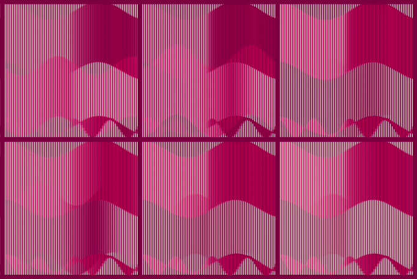

Creating crowdlike affinities between objects, inspired by Markov random fields.
p5.js on HTML canvas
Have you ever lost yourself in a swarm? This piece turns canvas elements into strangers in a crowd. Each neighboring cell has a psyche, with its own preferred moods, social energy, and personal history. The result is a grid of unique graphics, glittering and shifting in spite and because of each other. It is loosely inspired by the probabistic model of Markov random fields and strongly inspired by being a human in the world.